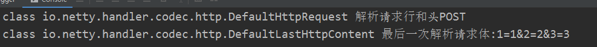

Http处理
一、HTTP的基本知识
看下这个协议的格式，这个是请求，响应差不多的：
POST方法的：
GET方法的：

POST消息体传输方式
直接发送消息体
最长见的就是直接在POST请求头里设置了Content-Length属性，也就是所谓的定长，只要接收端根据这个去读定长的字节就行，这个方便是方便，但是如果一个比较大的数据，可能要消耗比较大的内存。
块传输
还有一种是Transfer-Encoding: chunked，然后消息体可以分成好几次传，有一定的格式规范，这个其实就可以降低接收端的内存消耗，特别是一些不定长的数据。比如要从数据库里源源不断的读消息传出去，你可能不知道总共有多大，只有读了才知道。
Netty关于HTTP设计
其实有很多相关的接口，画个结构图，大致了解下他们的用途和之间的关系，虚线框表示是接口，主要netty把相同消息行部分和消息头都抽离出来了，最后进行一个整合。具体还是看源码比较好：
DecoderResult编码结果
要对HTTP数据解码，得有个成功失败的结果吧。这个就是封装了编码的结果，主要有成功，失败，还未完成。
DecoderResultProvider编码结果提供器
用来设置和获取编码结果。
x1public interface DecoderResultProvider {2
3 DecoderResult decoderResult();4
5 void setDecoderResult(DecoderResult result);6}HttpObject编码结果提供接口
其实是一个Http编码结果提供接口，唯一的方法还被标记弃用了：
ByteBufHolder对HTTP消息体的一些操作
这个主要是针对接受和发送的消息体缓冲区的一些操作和管理。
411public interface ByteBufHolder extends ReferenceCounted {2
3 /**4 * Return the data which is held by this {@link ByteBufHolder}.5 */6 ByteBuf content();7
8 /** 深拷贝一份9 * Creates a deep copy of this {@link ByteBufHolder}.10 */11 ByteBufHolder copy();12
13 /** 浅拷贝副本14 * Duplicates this {@link ByteBufHolder}. Be aware that this will not automatically call {@link #retain()}.15 */16 ByteBufHolder duplicate();17
18 /** 保留的这个副本19 * Duplicates this {@link ByteBufHolder}. This method returns a retained duplicate unlike {@link #duplicate()}.20 *21 * @see ByteBuf#retainedDuplicate()22 */23 ByteBufHolder retainedDuplicate();24
25 /** 创建一个新的26 * Returns a new {@link ByteBufHolder} which contains the specified {@code content}.27 */28 ByteBufHolder replace(ByteBuf content);29
30 31 ByteBufHolder retain();32
33 34 ByteBufHolder retain(int increment);35
36 37 ByteBufHolder touch();38
39 40 ByteBufHolder touch(Object hint);41}HttpMessage协议和头信息接口
公共的就是协议版本号和一些头信息。
231public interface HttpMessage extends HttpObject {2
3 /**4 * @deprecated Use {@link #protocolVersion()} instead.5 */6 7 HttpVersion getProtocolVersion();8
9 /**10 * Returns the protocol version of this {@link HttpMessage}11 */12 HttpVersion protocolVersion();13
14 /**15 * Set the protocol version of this {@link HttpMessage}16 */17 HttpMessage setProtocolVersion(HttpVersion version);18
19 /**20 * Returns the headers of this message.21 */22 HttpHeaders headers();23}HttpContent消息体接口
251public interface HttpContent extends HttpObject, ByteBufHolder {2 3 HttpContent copy();4
5 6 HttpContent duplicate();7
8 9 HttpContent retainedDuplicate();10
11 12 HttpContent replace(ByteBuf content);13
14 15 HttpContent retain();16
17 18 HttpContent retain(int increment);19
20 21 HttpContent touch();22
23 24 HttpContent touch(Object hint);25}LastHttpContent最后一个消息体接口
1201public interface LastHttpContent extends HttpContent {2
3 /**4 * The 'end of content' marker in chunked encoding.5 */6 LastHttpContent EMPTY_LAST_CONTENT = new LastHttpContent() {7
8 9 public ByteBuf content() {10 return Unpooled.EMPTY_BUFFER;11 }12
13 14 public LastHttpContent copy() {15 return EMPTY_LAST_CONTENT;16 }17
18 19 public LastHttpContent duplicate() {20 return this;21 }22
23 24 public LastHttpContent replace(ByteBuf content) {25 return new DefaultLastHttpContent(content);26 }27
28 29 public LastHttpContent retainedDuplicate() {30 return this;31 }32
33 34 public HttpHeaders trailingHeaders() {35 return EmptyHttpHeaders.INSTANCE;36 }37
38 39 public DecoderResult decoderResult() {40 return DecoderResult.SUCCESS;41 }42
43 44 45 public DecoderResult getDecoderResult() {46 return decoderResult();47 }48
49 50 public void setDecoderResult(DecoderResult result) {51 throw new UnsupportedOperationException("read only");52 }53
54 55 public int refCnt() {56 return 1;57 }58
59 60 public LastHttpContent retain() {61 return this;62 }63
64 65 public LastHttpContent retain(int increment) {66 return this;67 }68
69 70 public LastHttpContent touch() {71 return this;72 }73
74 75 public LastHttpContent touch(Object hint) {76 return this;77 }78
79 80 public boolean release() {81 return false;82 }83
84 85 public boolean release(int decrement) {86 return false;87 }88
89 90 public String toString() {91 return "EmptyLastHttpContent";92 }93 };94
95 HttpHeaders trailingHeaders();96
97 98 LastHttpContent copy();99
100 101 LastHttpContent duplicate();102
103 104 LastHttpContent retainedDuplicate();105
106 107 LastHttpContent replace(ByteBuf content);108
109 110 LastHttpContent retain(int increment);111
112 113 LastHttpContent retain();114
115 116 LastHttpContent touch();117
118 119 LastHttpContent touch(Object hint);120}HttpRequest包含请求行和请求头的接口
请求行相关独有接口，无消息体接口。
81public interface HttpRequest extends HttpMessage {2 HttpMethod method();3 HttpRequest setMethod(HttpMethod method);4 String uri();5 HttpRequest setUri(String uri);6 7 HttpRequest setProtocolVersion(HttpVersion version);8}HttpResponse包含响应行和响应头的接口
响应行相关独有接口，无消息体接口。
231public interface HttpResponse extends HttpMessage {2
3 /**4 * @deprecated Use {@link #status()} instead.5 */6 7 HttpResponseStatus getStatus();8
9 /**10 * Returns the status of this {@link HttpResponse}.11 *12 * @return The {@link HttpResponseStatus} of this {@link HttpResponse}13 */14 HttpResponseStatus status();15
16 /**17 * Set the status of this {@link HttpResponse}.18 */19 HttpResponse setStatus(HttpResponseStatus status);20
21 22 HttpResponse setProtocolVersion(HttpVersion version);23}FullHttpMessage请求和响应的通用HTTP信息接口
除了请求行的方法和URI和相应行的状态码之外的所有通用HTTP信息，也就是消息头，协议版本，消息体。
261public interface FullHttpMessage extends HttpMessage, LastHttpContent {2 3 FullHttpMessage copy();4
5 6 FullHttpMessage duplicate();7
8 9 FullHttpMessage retainedDuplicate();10
11 12 FullHttpMessage replace(ByteBuf content);13
14 15 FullHttpMessage retain(int increment);16
17 18 FullHttpMessage retain();19
20 21 FullHttpMessage touch();22
23 24 FullHttpMessage touch(Object hint);25}26
FullHttpRequest完整HTTP请求消息接口
31public interface FullHttpRequest extends HttpRequest, FullHttpMessage {2 3}FullHttpResponse完整HTTP响应消息接口
21public interface FullHttpResponse extends HttpResponse, FullHttpMessage {2}Netty有关Http的编解码器
HttpRequestDecoder请求解码器
首先会将请求行和请求头解析出来，根据请求头中是否有Content-Length或者Transfer-Encoding: chunked属性来判断是否还需要进行解码，如果需要，还持续进行解码，直到把消息体全部收完为止，而且期间会解码一次传递一次消息，因此自定义的处理器会不断的收到消息，第一次是消息行和消息头，后面就是消息体，直到收到最后一次消息体才会结束。基本上是按这么解码的，每一块都会被向后传递：
如果是比较大的包，比如文件，可以直接用这个，块传输，边传输边进行其他操作，比如一遍下载一遍看视频，断点续传啊这类。占用内存少，接受一个处理完可以释放内存，或者复用。
HttpObjectAggregator消息聚合器
在后面加在处理器，这个就是可以解决上面的问题，可以把消息聚合成一个复合缓冲区，一起给后面的处理器，直接封装成AggregatedFullHttpRequest类型传递下去。这样就不需要在处理器中判断是否接受到一半的逻辑了。但是这个有一个指定接受的长度限制，超过长度了直接就丢弃不处理了。主要可以用于接收一些相对较小的消息，不用后面处理器再去判断是否是个完整的包，但是如果包很大可能占用很大内存。
二、HttpRequestDecoder详细介绍
HTTP请求的解码器，用来解析HTTP协议格式的。用一个简单的例子来说，一个请求解码，一个响应编码，最后一个自定义的处理器，来分析下，请求解码做了什么。
31pipeline.addLast(new HttpRequestDecoder());2pipeline.addLast(new HttpResponseEncoder());3pipeline.addLast("MyTestHttpServerHandler", new MyHttpServerHandler()); 继承了一个HttpObjectDecoder，应该是一个通用的HTTP解码器，也是继承以前讲过的ByteToMessageDecoder，我们先来看下HttpRequestDecoder这个类，主要的在HttpObjectDecoder都实现了。从下面可以看到其实这个类本身没实现什么解码逻辑，主要的还是在他的父类。
411public class HttpRequestDecoder extends HttpObjectDecoder {2
3 //构造函数4 public HttpRequestDecoder() {5 }6 7 public HttpRequestDecoder(int maxInitialLineLength, int maxHeaderSize, int maxChunkSize) {8 super(maxInitialLineLength, maxHeaderSize, maxChunkSize, true);9 }10
11 public HttpRequestDecoder(12 int maxInitialLineLength, int maxHeaderSize, int maxChunkSize, boolean validateHeaders) {13 super(maxInitialLineLength, maxHeaderSize, maxChunkSize, true, validateHeaders);14 }15
16 public HttpRequestDecoder(17 int maxInitialLineLength, int maxHeaderSize, int maxChunkSize, boolean validateHeaders,18 int initialBufferSize) {19 super(maxInitialLineLength, maxHeaderSize, maxChunkSize, true, validateHeaders, initialBufferSize);20 }21 22 //根据请求行创建HttpMessage 版本，方法，URI23 24 protected HttpMessage createMessage(String[] initialLine) throws Exception {25 return new DefaultHttpRequest(26 HttpVersion.valueOf(initialLine[2]),27 HttpMethod.valueOf(initialLine[0]), initialLine[1], validateHeaders);28 }29 30 //无效请求31 32 protected HttpMessage createInvalidMessage() {33 return new DefaultFullHttpRequest(HttpVersion.HTTP_1_0, HttpMethod.GET, "/bad-request", validateHeaders);34 }35 36 //是否是请求解码37 38 protected boolean isDecodingRequest() {39 return true;40 }41}HttpObjectDecoder
父类。
属性
我们先了解下一些重要的属性，因为要解析HTTP协议格式，所以需要有换行符解析器，请求头解析器，还要看是否是用content-length传输还是用transfer-encoding块传输。还定义了一些状态，用来执行不同的逻辑。
381private static final String EMPTY_VALUE = "";//请求头空值2
3private final int maxChunkSize;//块的最大长度4private final boolean chunkedSupported;//是否支持分块chunk发送5protected final boolean validateHeaders;//是否验证头名字合法性6private final HeaderParser headerParser;//请求头解析器7private final LineParser lineParser;//换行符解析器8
9private HttpMessage message;//请求的消息，包括请求行和请求头10private long chunkSize;//保存下一次要读的消息体长度11private long contentLength = Long.MIN_VALUE;//消息体长度12private volatile boolean resetRequested;//重置请求13
14// These will be updated by splitHeader(...)15private CharSequence name;//头名字16private CharSequence value;//头的值17
18private LastHttpContent trailer;//请求体结尾19
20·/** 状态21 * The internal state of {@link HttpObjectDecoder}.22 * <em>Internal use only</em>.23 */24private enum State {25 SKIP_CONTROL_CHARS,//检查控制字符26 READ_INITIAL,//开始读取27 READ_HEADER,//读取头28 READ_VARIABLE_LENGTH_CONTENT,//读取可变长内容，用于chunk传输29 READ_FIXED_LENGTH_CONTENT,//读取固定长内容 用于Content-Length30 READ_CHUNK_SIZE,//chunk传输的每个chunk尺寸31 READ_CHUNKED_CONTENT,//每个chunk内容32 READ_CHUNK_DELIMITER,//chunk分割33 READ_CHUNK_FOOTER,//最后一个chunk34 BAD_MESSAGE,//无效消息35 UPGRADED//协议切换36}37//状态38private State currentState = State.SKIP_CONTROL_CHARS;构造器
参数对应一行最大长度，请求头的最大长度，请求体或者某个块的最大长度，是否支持chunk块传输。
361protected HttpObjectDecoder() {2 this(4096, 8192, 8192, true);3}4
5/**6 * Creates a new instance with the specified parameters.7 */8protected HttpObjectDecoder(9 int maxInitialLineLength, int maxHeaderSize, int maxChunkSize, boolean chunkedSupported) {10 this(maxInitialLineLength, maxHeaderSize, maxChunkSize, chunkedSupported, true);11}12
13/**14 * Creates a new instance with the specified parameters.15 */16protected HttpObjectDecoder(17 int maxInitialLineLength, int maxHeaderSize, int maxChunkSize,18 boolean chunkedSupported, boolean validateHeaders) {19 this(maxInitialLineLength, maxHeaderSize, maxChunkSize, chunkedSupported, validateHeaders, 128);20}21
22protected HttpObjectDecoder(23 int maxInitialLineLength, int maxHeaderSize, int maxChunkSize,24 boolean chunkedSupported, boolean validateHeaders, int initialBufferSize) {25 checkPositive(maxInitialLineLength, "maxInitialLineLength");26 checkPositive(maxHeaderSize, "maxHeaderSize");27 checkPositive(maxChunkSize, "maxChunkSize");28
29 // 可添加的字符序列，这个底层是一个字符数组，可以动态添加到最后。30 AppendableCharSequence seq = new AppendableCharSequence(initialBufferSize);31 lineParser = new LineParser(seq, maxInitialLineLength);32 headerParser = new HeaderParser(seq, maxHeaderSize);33 this.maxChunkSize = maxChunkSize;34 this.chunkedSupported = chunkedSupported;35 this.validateHeaders = validateHeaders;36}HeaderParser头解析器
检查字节缓冲区，获取一行头信息，ByteProcessor 这个就是处理是否遇到某个字节，就是process方法。这边处理的就是如果发现是回车，就不添加任何字符，返回true，继续解析，遇到换行就返回false，不解析了，否则将字符添加到字符序列中，返回true，继续解析。
501private static class HeaderParser implements ByteProcessor {2 private final AppendableCharSequence seq;//可添加的字符序列3 private final int maxLength;//最大长度4 private int size;//索引5
6 HeaderParser(AppendableCharSequence seq, int maxLength) {7 this.seq = seq;8 this.maxLength = maxLength;9 }10 //解析缓冲区11 public AppendableCharSequence parse(ByteBuf buffer) {12 final int oldSize = size;13 seq.reset();14 // ---看1.3.2---15 int i = buffer.forEachByte(this);16 if (i == -1) {//没读到换行，或者报异常了17 size = oldSize;18 return null;19 }20 buffer.readerIndex(i + 1);21 return seq;22 }23 //读到的字符个数清零24 public void reset() {25 size = 0;26 }27 // ---往下看1.3.1---28 //处理数据，遇到换行了就结束29 30 public boolean process(byte value) throws Exception {31 char nextByte = (char) (value & 0xFF);32 if (nextByte == HttpConstants.CR) {//遇到回车符，直接返回true，不添加字符33 return true;34 }35 if (nextByte == HttpConstants.LF) {//遇到换行符，就会结束36 return false;37 }38
39 if (++ size > maxLength) {//溢出了40 throw newException(maxLength);41 }42
43 seq.append(nextByte);//添加44 return true;45 }46//头过大47 protected TooLongFrameException newException(int maxLength) {48 return new TooLongFrameException("HTTP header is larger than " + maxLength + " bytes.");49 }50}process
parse方法的buffer.forEachByte(this)里。
forEachByte
这个方法就是传一个字节处理器，然后字节缓冲区挨个处理字节，返回索引。
101public int forEachByte(ByteProcessor processor) {3 ensureAccessible();4 try {5 return forEachByteAsc0(readerIndex, writerIndex, processor);6 } catch (Exception e) {7 PlatformDependent.throwException(e);8 return -1;9 }10} forEachByteAsc0，这个就是具体的方法啦，里面调用了processor的process方法，从头到位把每个字节传进去处理，如果有遇到换行符，会返回相应索引，否则就是-1。
91int forEachByteAsc0(int start, int end, ByteProcessor processor) throws Exception {2 for (; start < end; ++start) {3 if (!processor.process(_getByte(start))) {4 return start;5 }6 }7
8 return -1;//表示没有遇到换行符9}LineParser行解析器
继承了头解析器，只是解析的时候要reset一下，就是把读到的个数清0，因为是一行行读，每次读完一行就得清理个数。虽然字符串序列可以不处理，可以复用。
171private static final class LineParser extends HeaderParser {2
3 LineParser(AppendableCharSequence seq, int maxLength) {4 super(seq, maxLength);5 }6
7 8 public AppendableCharSequence parse(ByteBuf buffer) {9 reset();//从头开始，要重置索引10 return super.parse(buffer);11 }12
13 14 protected TooLongFrameException newException(int maxLength) {15 return new TooLongFrameException("An HTTP line is larger than " + maxLength + " bytes.");16 }17}decode解码
这个是最核心的方法，包括了解析请求行，请求头，请求体，但是会将请求行和请求头整合起来形成一个请求DefaultHttpRequest传递到后面，把请求体再封装成消息体传递到后面，因为请求体可能很大，所以也可能会有多次封装，那后面处理器就可能收到多次消息体。如果是GET的话是没有消息体的，首先收到一个DefaultHttpRequest，然后是一个空的LastHttpContent。如果是POST的话，先收到DefaultHttpRequest，然后可能多个内容DefaultHttpContent和一个DefaultLastHttpContent。
检查并略过控制字符SKIP_CONTROL_CHARS‘
首先我们要检查下我们的字节缓冲区里面是不是全是控制字符(类似回车换行，空格这种)，如果是的话就不处理，返回了，不是的话就略过控制字符，然后返回。如果不全是控制字符，那就状态切换到READ_INITIAL开始读取。
61case SKIP_CONTROL_CHARS: {2 if (!skipControlCharacters(buffer)) {3 return;//如果全是控制字符就返回了4 }5 currentState = State.READ_INITIAL;6}skipControlCharacters略过控制字符
这个方法就是看没有不是控制字符的，如果全是控制字符，就返回false，有不是控制字符的就略过控制字符并返回true。具体方法就是从可读索引开始，直接获取对应的无符号字节，然后判断是不是ISO的控制字符或者空格，如果不是，直接就返回，否则就继续，直到遇到不是的位置，然后要略过控制字符。
151private static boolean skipControlCharacters(ByteBuf buffer) {2 boolean skiped = false;3 final int wIdx = buffer.writerIndex();4 int rIdx = buffer.readerIndex();5 while (wIdx > rIdx) {6 int c = buffer.getUnsignedByte(rIdx++);//获取无符号字节7 if (!Character.isISOControl(c) && !Character.isWhitespace(c)) {//不是ISO的控制字符也不是空格8 rIdx--;9 skiped = true;//有不是控制字符的，直接返回10 break;11 }12 }13 buffer.readerIndex(rIdx);//略过控制字符14 return skiped;15}开始读取READ_INITIAL
会开始读取一行，如果没有读到换行符，可能是因为数据还没收全，那就什么都不做，返回。
否则就开始分割，分割出方法，URI，协议，当然如果请求头无效，就不管了，重新返回到SKIP_CONTROL_CHARS状态。如果是有效的，就封装成请求消息HttpMessage包括请求行和请求头信息，讲状态切换到READ_HEADER读头信息。
191case READ_INITIAL: try {//读取请求行2 AppendableCharSequence line = lineParser.parse(buffer);//解析一行数据3 if (line == null) {//没解析到换行符4 return;5 }6 String[] initialLine = splitInitialLine(line);//行分割后的数组7 if (initialLine.length < 3) {//小于3个就说明格式(方法 URI 版本)不对，直接忽略8 // Invalid initial line - ignore.9 currentState = State.SKIP_CONTROL_CHARS;10 return;11 }12
13 message = createMessage(initialLine);//创建请求消息14 currentState = State.READ_HEADER;15 // fall-through16} catch (Exception e) {17 out.add(invalidMessage(buffer, e));18 return;19}splitInitialLine分割请求行
可以看到其实执行了3次检测，刚好把请求行给分割出来，最后用字符串切割出来封装成数组返回。
231//按空格进行一行的分割2private static String[] splitInitialLine(AppendableCharSequence sb) {3 int aStart;4 int aEnd;5 int bStart;6 int bEnd;7 int cStart;8 int cEnd;9
10 aStart = findNonWhitespace(sb, 0);//找出不是空格的第一个索引11 aEnd = findWhitespace(sb, aStart);//找出空格索引12
13 bStart = findNonWhitespace(sb, aEnd);14 bEnd = findWhitespace(sb, bStart);15
16 cStart = findNonWhitespace(sb, bEnd);17 cEnd = findEndOfString(sb);18
19 return new String[] {20 sb.subStringUnsafe(aStart, aEnd),21 sb.subStringUnsafe(bStart, bEnd),22 cStart < cEnd? sb.subStringUnsafe(cStart, cEnd) : "" };23}createMessage创建请求消息
创建一个DefaultHttpRequest，就是一个HttpRequest接口的默认实现，封装请求行和请求头信息。
61protected HttpMessage createMessage(String[] initialLine) throws Exception {3 return new DefaultHttpRequest(4 HttpVersion.valueOf(initialLine[2]),//协议版本5 HttpMethod.valueOf(initialLine[0]), initialLine[1], validateHeaders);//方法和URI6}invalidMessage无效消息
创建一个无效消息，状态直接为BAD_MESSAGE无效，把缓冲区内的数据直接都略过，如果请求消息没创建好，就创建一个，然后设置失败结果并带上异常信息返回。
141private HttpMessage invalidMessage(ByteBuf in, Exception cause) {2 currentState = State.BAD_MESSAGE;//设置无效数据，这样后面同一个消息的数据都会被略过3
4 in.skipBytes(in.readableBytes());//直接不可读，略过可读数据5
6 if (message == null) {7 message = createInvalidMessage();8 }9 message.setDecoderResult(DecoderResult.failure(cause));//设置失败10
11 HttpMessage ret = message;12 message = null;13 return ret;14}createInvalidMessage创建完整的请求
直接返回完整的请求消息，参数设置成有问题的就可以了。
41protected HttpMessage createInvalidMessage() {3 return new DefaultFullHttpRequest(HttpVersion.HTTP_1_0, HttpMethod.GET, "/bad-request", validateHeaders);4}READ_HEADER读取头
首先会先解析请求头，然后看里面有没有transfer-encoding或者content-length，来进行后续的消息体读取。
491case READ_HEADER: 2try {3 // ---往下看1---4 //读取请求头5 State nextState = readHeaders(buffer);6 if (nextState == null) {7 return;8 }9 currentState = nextState;10 switch (nextState) {11 case SKIP_CONTROL_CHARS://没有内容，直接传递两个消息12 out.add(message);13 out.add(LastHttpContent.EMPTY_LAST_CONTENT);空内容14 resetNow();15 return;16 // ---往下看2---17 case READ_CHUNK_SIZE://块协议传递18 if (!chunkedSupported) {19 throw new IllegalArgumentException("Chunked messages not supported");20 }21 out.add(message);22 return;23 default:24 //没有transfer-encoding或者content-length头 表示没消息体，比如GET请求25 long contentLength = contentLength();26 if (contentLength == 0 || contentLength == -1 && isDecodingRequest()) {//没消息体，直接就补一个空消息体27 out.add(message);//消息行和消息头28 out.add(LastHttpContent.EMPTY_LAST_CONTENT);//空消息体29 resetNow();//重置属性30 return;31 }32 // ---往下看3---33 assert nextState == State.READ_FIXED_LENGTH_CONTENT ||34 // ---往下看4---35 nextState == State.READ_VARIABLE_LENGTH_CONTENT;36 //有消息体，就先放入行和头信息，下一次解码再进行消息体的读取37 out.add(message);//38
39 if (nextState == State.READ_FIXED_LENGTH_CONTENT) {40
41 chunkSize = contentLength;//如果是固定长度的消息体，要保存下一次要读的消息体长度42 }43
44 return;45 }46} catch (Exception e) {47 out.add(invalidMessage(buffer, e));//异常了就无效48 return;49}readHeaders，解析头主要就是按行解析头消息，然后进行头信息分割，然后放入
headers，最后根据content-length来决定后面的状态，是读取固定长READ_FIXED_LENGTH_CONTENT还是可变长READ_VARIABLE_LENGTH_CONTENT，还是是读取块大小READ_CHUNK_SIZE。
661private State readHeaders(ByteBuf buffer) {2 final HttpMessage message = this.message;3 final HttpHeaders headers = message.headers();//获得请求头4
5 AppendableCharSequence line = headerParser.parse(buffer);//解析请求头6 if (line == null) {7 return null;8 }9 if (line.length() > 0) {10 do {11 char firstChar = line.charAtUnsafe(0);12 if (name != null && (firstChar == ' ' || firstChar == '\t')) {13 //please do not make one line from below code14 //as it breaks +XX:OptimizeStringConcat optimization15 String trimmedLine = line.toString().trim();16 String valueStr = String.valueOf(value);17 value = valueStr + ' ' + trimmedLine;18 } else {19 if (name != null) {20 headers.add(name, value);//如果名字解析出来表示值也出来了，就添加进去21 }22 splitHeader(line);//分割请求头23 }24
25 line = headerParser.parse(buffer);//继续解析头26 if (line == null) {27 return null;28 }29 } while (line.length() > 0);30 }31
32 // Add the last header.33 if (name != null) {//添加最后一个34 headers.add(name, value);35 }36
37 // reset name and value fields 重置38 name = null;39 value = null;40 //找content-length头信息41 List<String> values = headers.getAll(HttpHeaderNames.CONTENT_LENGTH);42 int contentLengthValuesCount = values.size();//长度头的值的个数43
44 if (contentLengthValuesCount > 0) {45 if (contentLengthValuesCount > 1 && message.protocolVersion() == HttpVersion.HTTP_1_1) {//如果是HTTP_1_1找到多个Content-Length是不对的，要抛异常46 throw new IllegalArgumentException("Multiple Content-Length headers found");47 }48 contentLength = Long.parseLong(values.get(0));//获取消息体长49 }50
51 if (isContentAlwaysEmpty(message)) {//空内容52 HttpUtil.setTransferEncodingChunked(message, false);//不开启块传输53 return State.SKIP_CONTROL_CHARS;54 } else if (HttpUtil.isTransferEncodingChunked(message)) {55 if (contentLengthValuesCount > 0 && message.protocolVersion() == HttpVersion.HTTP_1_1) {//HTTP_1_1如果开启了快协议，就不能设置Content-Length了56 throw new IllegalArgumentException(57 "Both 'Content-Length: " + contentLength + "' and 'Transfer-Encoding: chunked' found");58 }59
60 return State.READ_CHUNK_SIZE;//块传输，要获取大小61 } else if (contentLength() >= 0) {62 return State.READ_FIXED_LENGTH_CONTENT;//可以固定长度解析消息体63 } else {64 return State.READ_VARIABLE_LENGTH_CONTENT;//可变长度解析，或者没有Content-Length，http1.0以及之前或者1.1 非keep alive,Content-Length可有可无65 }66} 这里有两个要注意的，如果是HTTP1.1一个头只能对应一个值，而且Content-Length和Transfer-Encoding不能同时存在。http1.0以及之前或者http1.1没设置keepalive的话Content-Length可有可无。
Header的结构
外部看上去很像是跟MAP一样添加头信息，其实内部还是使用了数组和单链表和双向循环链表，好比是HashMap的加强版。使用了hash算法定位数组的索引，然后有冲突的时候用单链表头插进去，而且头信息顺序按照双向循环链表连起来了，方便前后定位。
READ_CHUNK_SIZE读取块大小，如果是
chunk块传输，根据块传输协议，就应该是获取块大小。
比如要传输aab，使用块协议，第一块长度是2，内容是aa，第二块长度是1，内容是b，第三块长度是0，内容是空(就有回车换行)，记得长度内容后面都有回车换行啊。
201case READ_CHUNK_SIZE: try {//读取块尺寸2 AppendableCharSequence line = lineParser.parse(buffer);3 if (line == null) {4 return;5 }6 // ---往下看a---7 int chunkSize = getChunkSize(line.toString());8 this.chunkSize = chunkSize;//块长度9 if (chunkSize == 0) {//读到块结束标记 0\r\n10 // ---往下看c---11 currentState = State.READ_CHUNK_FOOTER;12 return;13 }14 // ---往下看b---15 currentState = State.READ_CHUNKED_CONTENT;//继续读内容16 // fall-through17} catch (Exception e) {18 out.add(invalidChunk(buffer, e));//无效块19 return;20} 如果读取的块长度是0了，那说明要到最后一个了，状态就要转到READ_CHUNK_FOOTER，否则就转到读内容READ_CHUNKED_CONTENT。
a. getChunkSize获取块大小，这里连;，空格，控制字符都算截止符了。
121private static int getChunkSize(String hex) {2 hex = hex.trim();3 for (int i = 0; i < hex.length(); i ++) {4 char c = hex.charAt(i);5 if (c == ';' || Character.isWhitespace(c) || Character.isISOControl(c)) {6 hex = hex.substring(0, i);7 break;8 }9 }10
11 return Integer.parseInt(hex, 16);12} b. READ_CHUNKED_CONTENT，读取块内容，根据块长度chunkSize读取字节，如果读取长度等于chunkSize，表示读完了，需要读取分隔符，也就是换车换行了，状态转到READ_CHUNK_DELIMITER，否则就将读取的内容，封装成DefaultHttpContent传递下去，然后下一次继续读取内容。
351case READ_CHUNKED_CONTENT: {2 //读取块内容，其实没读取，只是用切片，从切片读，不影响原来的3 assert chunkSize <= Integer.MAX_VALUE;4 int toRead = Math.min((int) chunkSize, maxChunkSize);5 toRead = Math.min(toRead, buffer.readableBytes());6 if (toRead == 0) {7 return;8 }9 HttpContent chunk = new DefaultHttpContent(buffer.readRetainedSlice(toRead));//创建一个块，里面放的是切片10 chunkSize -= toRead;11
12 out.add(chunk);13
14 if (chunkSize != 0) {//当前块还没接受完，就返回15 return;16 }17 currentState = State.READ_CHUNK_DELIMITER;//接受完，找到块分割符18 // fall-through19}20
21// READ_CHUNK_DELIMITER 读取块分隔符22// 其实就是回车换行符，找到了就转到READ_CHUNK_SIZE继续去取下一个块长度。23case READ_CHUNK_DELIMITER: {//找到块分隔符24 final int wIdx = buffer.writerIndex();25 int rIdx = buffer.readerIndex();26 while (wIdx > rIdx) {27 byte next = buffer.getByte(rIdx++);28 if (next == HttpConstants.LF) {//找到换行符，继续读下一个块的大小29 currentState = State.READ_CHUNK_SIZE;30 break;31 }32 }33 buffer.readerIndex(rIdx);34 return;35} c. READ_CHUNK_FOOTER，读最后一个块，如果读取的块长度chunkSize=0的话，就说明是最后一个块了，然后要看下是否还有头信息在后面，有头信息的话会封装成DefaultLastHttpContent，如果没有的话头信息就是LastHttpContent.EMPTY_LAST_CONTENT
661case READ_CHUNK_FOOTER: try {//读到最后一个了2 //读取最后的内容，可能有头信息，也可能没有3 LastHttpContent trailer = readTrailingHeaders(buffer);4 if (trailer == null) {//还没结束的，继续5 return;6 }7 out.add(trailer);//添加最后内容8 resetNow();9 return;10} catch (Exception e) {11 out.add(invalidChunk(buffer, e));12 return;13}14
15// readTrailingHeaders 读取最后的头信息16// 会去读取一行，如果没读出来换行，表示可能没收到数据，也就是没读完，那就返回，继续下一次。17// 如果读出来发现就只有回车换行，那就说明没有头信息，结束了，就返回一个 LastHttpContent.EMPTY_LAST_CONTENT，18// 否则的话就创建一个DefaultLastHttpContent内容，然后进行头信息的解析，解析出来的头信息就放入内容中，并返回内容。19private LastHttpContent readTrailingHeaders(ByteBuf buffer) {20 AppendableCharSequence line = headerParser.parse(buffer);21 if (line == null) {//没有换行，表示没读完呢22 return null;23 }24 LastHttpContent trailer = this.trailer;25 if (line.length() == 0 && trailer == null) {//直接读到\r\n 即读到空行，表示结束,无头信息，返回空内容26 return LastHttpContent.EMPTY_LAST_CONTENT;27 }28
29 CharSequence lastHeader = null;30 if (trailer == null) {31 trailer = this.trailer = new DefaultLastHttpContent(Unpooled.EMPTY_BUFFER, validateHeaders);//空内容32 }33 while (line.length() > 0) {//chunk最后可能还有头信息 key: 1\r\n34 char firstChar = line.charAtUnsafe(0);35 if (lastHeader != null && (firstChar == ' ' || firstChar == '\t')) {36 List<String> current = trailer.trailingHeaders().getAll(lastHeader);37 if (!current.isEmpty()) {38 int lastPos = current.size() - 1;39 //please do not make one line from below code40 //as it breaks +XX:OptimizeStringConcat optimization41 String lineTrimmed = line.toString().trim();42 String currentLastPos = current.get(lastPos);43 current.set(lastPos, currentLastPos + lineTrimmed);44 }45 } else {//解析头信息46 splitHeader(line);//47 CharSequence headerName = name;48 if (!HttpHeaderNames.CONTENT_LENGTH.contentEqualsIgnoreCase(headerName) &&49 !HttpHeaderNames.TRANSFER_ENCODING.contentEqualsIgnoreCase(headerName) &&50 !HttpHeaderNames.TRAILER.contentEqualsIgnoreCase(headerName)) {51 trailer.trailingHeaders().add(headerName, value);52 }53 lastHeader = name;54 // reset name and value fields55 name = null;56 value = null;57 }58 line = headerParser.parse(buffer);59 if (line == null) {60 return null;61 }62 }63
64 this.trailer = null;65 return trailer;66}
READ_FIXED_LENGTH_CONTENT，读取固定长度，固定长度就是有
contentLength，读取长度，如果等于记录的长度chunkSize，就表示读完了，直接传递最后内容DefaultLastHttpContent。否则说明没读完，就传递内容DefaultHttpContent。
231case READ_FIXED_LENGTH_CONTENT: {2 //有固定长消息体3 int readLimit = buffer.readableBytes();4 if (readLimit == 0) {5 return;6 }7
8 int toRead = Math.min(readLimit, maxChunkSize);//读取的个数9 if (toRead > chunkSize) {//如果大于块长度chunkSize，就读chunkSize个10 toRead = (int) chunkSize;11 }12 ByteBuf content = buffer.readRetainedSlice(toRead);13 chunkSize -= toRead;14
15 if (chunkSize == 0) {//块全部读完了16 // Read all content.17 out.add(new DefaultLastHttpContent(content, validateHeaders));//创建最后一个内容体，返回18 resetNow();//重置参数19 } else {20 out.add(new DefaultHttpContent(content));//还没读完，就创建一个消息体21 }22 return;23}READ_VARIABLE_LENGTH_CONTENT，读取可变长内容，直接读取可读的字节，然后封装成
DefaultHttpContent内容传递。
91case READ_VARIABLE_LENGTH_CONTENT: {2 // Keep reading data as a chunk until the end of connection is reached.3 int toRead = Math.min(buffer.readableBytes(), maxChunkSize);4 if (toRead > 0) {5 ByteBuf content = buffer.readRetainedSlice(toRead);6 out.add(new DefaultHttpContent(content));7 }8 return;9}BAD_MESSAGE无效消息
51case BAD_MESSAGE: {2 // Keep discarding until disconnection.3 buffer.skipBytes(buffer.readableBytes());//坏消息，直接略过，不读4 break;5}UPGRADED协议切换
协议的转换。
71case UPGRADED: {//协议切换2 int readableBytes = buffer.readableBytes();3 if (readableBytes > 0) { 4 out.add(buffer.readBytes(readableBytes));5 }6 break;7}resetNow重置属性
每次成功解码操作后都要重新设置属性。
201private void resetNow() {2 HttpMessage message = this.message;3 this.message = null;4 name = null;5 value = null;6 contentLength = Long.MIN_VALUE;7 lineParser.reset();8 headerParser.reset();9 trailer = null;10 if (!isDecodingRequest()) {//不是请求解码，如果要升级协议11 HttpResponse res = (HttpResponse) message;12 if (res != null && isSwitchingToNonHttp1Protocol(res)) {13 currentState = State.UPGRADED;14 return;15 }16 }17
18 resetRequested = false;19 currentState = State.SKIP_CONTROL_CHARS;20}运行结果
GET
先是DefaultHttpRequest：
然后LastHttpContent中的EMPTY_LAST_CONTENT：
POST
先是DefaultHttpRequest：
然后是DefaultLastHttpContent：

如果是发送比较大的信息，比如：
那就是可能会出现好几次消息体解析：
当然也可能一次，看接受缓冲区的情况啦：
三、HttpObjectAggregator
聚合消息
上边说了一个HTTP请求最少也会在HttpRequestDecoder里分成两次往后传递，第一次是消息行和消息头，第二次是消息体，哪怕没有消息体，也会传一个空消息体。如果发送的消息体比较大的话，可能还会分成好几个消息体来处理，往后传递多次，这样使得我们后续的处理器可能要写多个逻辑判断，比较麻烦，那能不能把消息都整合成一个完整的，再往后传递呢，当然可以，用HttpObjectAggregator。
属性
HTTP有个头属性Except:100-continue用来优化服务器和客户端数据传输的，在要发送比较大的数据的时候，不会直接发送，而是会先征求下服务器意见是否可以继续发送数据，服务器可以允许也可以不允许，都应该响应一下。
HTTP 100 Continue 状态码处理
100 Continue 状态码的目的是对这样的情况进行优化：HTTP 客户端应用程序有一个实体的主体部分要发送给服务器，但希望在发送之前查看一下服务器是否会接受这个实体。这可能会给编码带来一些困恼，因此这里进行详细讲解（它如何与客户端、服务器和代理进行通信）。
客户端与 100 Continue 如果客户端在向服务器发送一个实体，并且愿意在发送实体之前等待 100 Continue 响应，那么，客户端就要发送一个携带值为 100 Continue Expect 首部，因为这样会使服务器误以为客户端要发发送一个实体。从很多方面来看，100 Continue 都是一种优化。客户端应用程序只有在避免向服务器发送一个服务器无法处理或使用的大实体时，才应该使用 100 Continue。 由于期初对 100 Continue 状态存在一些困惑，因此发送了值为 100 Continue 的 Expect 首部的客户端不应该永远在那儿等待服务器发送 100 Continue 响应。超时一定时间之后，客户端应该直接将实体发送出去。
服务器与 100 Continue 如果服务器收到了一条带有值为 100 Continue 的 Expect 首部的请求，它会用 100 Continue 响应或一条错误码来进行响应。服务器永远也不应该向没有发送 100 Continue 期望的客户端发送 100 Continue 状态码 (有些出错的服务器可能会这么做)。如果出于某种原因，服务器在优机会发送 100 Continue 响应之前就收到了部分或全部的实体，就说明客户端已经决定继续发送数据了，这样，服务器就不需要发送这个状态码了。服务器读完请求之后，还是应该为请求发送一个最终状态码 (它可以跳过 100 Continue 状态)。 最后，如果服务器收到带有 100 Continue 期望的请求，而且它决定在读取实体的主体部分结束请求，就不应该仅仅是发送一条响应并关闭连接，因为这样会妨碍客户端接收响应。
代理与 100 Continue 如果代理从客户端收到了一条带有 100 Continue 期望的请求，它需要做几件事情。如果代理知道目标服务器是 HTTP/1.1 兼容的，或者并不知道目标服务器与哪个版本兼容，它都应该将 Expect 首部发在请求中向下转发。如果它知道目标服务器只能与 HTTP/1.1 之前的版本兼容，就应该以 417 Expectation Failed 错误进行响应。
问题处理： PHP cURL 方式发送请求到服务器，数据超过 1k，有些服务器就会返回 100 Continue ，解决方法在 cURL Header 中添加 Expect:'' 的首部为空，这样服务器就会直接接收请求的实体了。
251//接受100-continue，响应状态码1002private static final FullHttpResponse CONTINUE =//Except:100-continue的响应3 new DefaultFullHttpResponse(HttpVersion.HTTP_1_1, HttpResponseStatus.CONTINUE, Unpooled.EMPTY_BUFFER);4
5//不接受，响应状态码417 不支持6private static final FullHttpResponse EXPECTATION_FAILED = new DefaultFullHttpResponse(7 HttpVersion.HTTP_1_1, HttpResponseStatus.EXPECTATION_FAILED, Unpooled.EMPTY_BUFFER);8
9//不接受，响应状态码413 消息体太大而关闭连接10private static final FullHttpResponse TOO_LARGE_CLOSE = new DefaultFullHttpResponse(11 HttpVersion.HTTP_1_1, HttpResponseStatus.REQUEST_ENTITY_TOO_LARGE, Unpooled.EMPTY_BUFFER);12
13//不接受，响应状态码413 消息体太大，没关闭连接14private static final FullHttpResponse TOO_LARGE = new DefaultFullHttpResponse(15 HttpVersion.HTTP_1_1, HttpResponseStatus.REQUEST_ENTITY_TOO_LARGE, Unpooled.EMPTY_BUFFER);16
17static {//设定头消息18 EXPECTATION_FAILED.headers().set(CONTENT_LENGTH, 0);19 TOO_LARGE.headers().set(CONTENT_LENGTH, 0);20
21 TOO_LARGE_CLOSE.headers().set(CONTENT_LENGTH, 0);22 TOO_LARGE_CLOSE.headers().set(CONNECTION, HttpHeaderValues.CLOSE);//关闭头信息23}24
25private final boolean closeOnExpectationFailed;//如果消息过大是否关闭连接，报异常结构
看到他有4个泛型，分别对应是聚合HTTP类型的，HTTP通用消息请求行和请求头的，HTTP消息体，HTTP完整通用消息，包括消息体。
41public class HttpObjectAggregator2 extends MessageAggregator<HttpObject, HttpMessage, HttpContent, FullHttpMessage> {3 ....4}对应的父类的泛型就是：
41public abstract class MessageAggregator<I, S, C extends ByteBufHolder, O extends ByteBufHolder>2 extends MessageToMessageDecoder<I> {3 ....4}这些类型直接会影响到后续的逻辑判断，所以要弄清楚对应的关系。
父类MessageAggregator
主要的逻辑代码在这里，这个是通用的模板，里面就是模板方法啦，先看下他的一些属性吧，他会把HTTP的消息体都封装成一个缓冲区，加到复合缓冲区里。
属性
111private static final int DEFAULT_MAX_COMPOSITEBUFFER_COMPONENTS = 1024;//最大复合缓冲区组件个数2
3private final int maxContentLength;//最大消息图长度4private O currentMessage;//当前消息5private boolean handlingOversizedMessage;//是否处理过大消息6
7private int maxCumulationBufferComponents = DEFAULT_MAX_COMPOSITEBUFFER_COMPONENTS;//累加组件的最大个数8private ChannelHandlerContext ctx;//处理器上下文9private ChannelFutureListener continueResponseWriteListener;// 100-continue响应监听器10
11private boolean aggregating;//是否正在聚合acceptInboundMessage判断类型
判断是否是泛型I类型，也就是我们HttpObjectAggregator泛型中的HttpObject类型，是才会处理，否则就不处理。然后会判断是否聚合好了，如果没开始聚合就进行聚合，如果还在聚合就继续。
271public boolean acceptInboundMessage(Object msg) throws Exception {3
4 if (!super.acceptInboundMessage(msg)) {//是否是泛型I类型，比如HttpObject类型5 return false;6 }7 ("unchecked")8 I in = (I) msg;9
10 if (isAggregated(in)) {//是否聚合好了11 return false;12 }13 if (isStartMessage(in)) {//是否是开始聚合14 aggregating = true;//开始聚合15 return true;16 } else if (aggregating && isContentMessage(in)) {//正在内容聚合17 return true;18 }19
20 return false;21}22
23// isAggregated 是否聚合好了。24protected boolean isAggregated(HttpObject msg) throws Exception {26 return msg instanceof FullHttpMessage;27}decode真正的聚合
消息执行：
如果是开始消息，也就不是请求体，那就开始判断是否有
Except:100-continue头信息，有的话根据长度和是否支持来判断是否要返回响应。之后判断如果前面解码失败，就直接整合消息体返回，否则就创建复合缓冲区，如果是消息体的话就添加进去，然后封装成一个完整的消息类型。如果是消息体了，就加入到复合画冲去里，然后判断是否是最后一个消息体，是的话就进行最后的整合，其实就是设置
Content-Length头信息。
1291protected void decode(final ChannelHandlerContext ctx, I msg, List<Object> out) throws Exception {3 assert aggregating;4
5 // ---看4.3.1---6 if (isStartMessage(msg)) {//是否是开始消息7 handlingOversizedMessage = false;//没处理超大信息8 if (currentMessage != null) {//上次的消息没释放9 currentMessage.release();10 currentMessage = null;11 throw new MessageAggregationException();12 }13
14 ("unchecked")15 S m = (S) msg;16
17 // ---看4.3.3---18 // 100-continue需要持续响应19 Object continueResponse = newContinueResponse(m, maxContentLength, ctx.pipeline());20 if (continueResponse != null) {//有 100-continue响应21 // Cache the write listener for reuse.22 ChannelFutureListener listener = continueResponseWriteListener;23 if (listener == null) {//不存在监听器要创建一个24 continueResponseWriteListener = listener = new ChannelFutureListener() {25 26 public void operationComplete(ChannelFuture future) throws Exception {27 if (!future.isSuccess()) {28 ctx.fireExceptionCaught(future.cause());29 }30 }31 };32 }33
34 // ---看4.3.4---35 boolean closeAfterWrite = closeAfterContinueResponse(continueResponse);36 37 // ---看4.3.5---38 handlingOversizedMessage = ignoreContentAfterContinueResponse(continueResponse);39 //这里会直接刷出去，所以HttpResponseEncoder需要放在这个前面，不然写出去没编码过会报错的40 final ChannelFuture future = ctx.writeAndFlush(continueResponse).addListener(listener);41
42 if (closeAfterWrite) {43 future.addListener(ChannelFutureListener.CLOSE);44 return;45 }46 if (handlingOversizedMessage) {47 return;48 }49 } else if (isContentLengthInvalid(m, maxContentLength)) {//消息体长度是否超过了50
51 invokeHandleOversizedMessage(ctx, m);52 return;53 }54 //解码不成功55 if (m instanceof DecoderResultProvider && !((DecoderResultProvider) m).decoderResult().isSuccess()) {56 O aggregated;57 if (m instanceof ByteBufHolder) {58 // ---看4.3.6---59 aggregated = beginAggregation(m, ((ByteBufHolder) m).content().retain());60 } else {61 aggregated = beginAggregation(m, EMPTY_BUFFER);62 }63 64 // ---看4.3.9---65 finishAggregation0(aggregated);66 out.add(aggregated);67 return;68 }69
70 CompositeByteBuf content = ctx.alloc().compositeBuffer(maxCumulationBufferComponents);//创建复合缓冲区71 if (m instanceof ByteBufHolder) {//是内容72 // ---看4.3.7---73 appendPartialContent(content, ((ByteBufHolder) m).content());74 }75 currentMessage = beginAggregation(m, content);//开始聚合76 } else if (isContentMessage(msg)) {//后面属于消息体聚合77 if (currentMessage == null) {//长度超过最大了，直接丢弃了，不处理了78
79 return;80 }81 //提取内容82 CompositeByteBuf content = (CompositeByteBuf) currentMessage.content();83
84 ("unchecked")85 final C m = (C) msg;86 // 超过最大长度了，处理过大的消息87 if (content.readableBytes() > maxContentLength - m.content().readableBytes()) {88
89 ("unchecked")90 S s = (S) currentMessage;91 invokeHandleOversizedMessage(ctx, s);92 return;93 }94
95 //添加新的内容到复合缓冲区96 appendPartialContent(content, m.content());97
98 99 // ---看4.3.8---100 aggregate(currentMessage, m);//整合尾部请求头101
102 final boolean last;//是不是最后一次聚合103 if (m instanceof DecoderResultProvider) {//处理解码结果104 DecoderResult decoderResult = ((DecoderResultProvider) m).decoderResult();105 if (!decoderResult.isSuccess()) {//没解码成功106 if (currentMessage instanceof DecoderResultProvider) {107 ((DecoderResultProvider) currentMessage).setDecoderResult(108 DecoderResult.failure(decoderResult.cause()));109 }110 last = true;111 } else {112 // ---看4.3.2---113 last = isLastContentMessage(m);//是否是最后的内容114 }115 } else {116 last = isLastContentMessage(m);117 }118
119 if (last) {//是最后的120 finishAggregation0(currentMessage);121
122 // All done123 out.add(currentMessage);124 currentMessage = null;125 }126 } else {127 throw new MessageAggregationException();128 }129}isStartMessage
对HTTP来说其实就是判断是否是通用的消息行和消息头信息。
41protected boolean isStartMessage(HttpObject msg) throws Exception {3 return msg instanceof HttpMessage;4}isLastContentMessage
是否是最后的内容。
41protected boolean isLastContentMessage(HttpContent msg) throws Exception {3 return msg instanceof LastHttpContent;4}newContinueResponse
如果需要100-continue响应的话，要把100-continue头设置去掉，不往后传播了。
91protected Object newContinueResponse(HttpMessage start, int maxContentLength, ChannelPipeline pipeline) {3 Object response = continueResponse(start, maxContentLength, pipeline);4
5 if (response != null) {6 start.headers().remove(EXPECT);//如果有100-continue响应，就不用再传播下去了7 }8 return response;9} continueResponse，这个就是上面说的根据是否支持100-continue，是否长度超过限制等进行响应。
161private static Object continueResponse(HttpMessage start, int maxContentLength, ChannelPipeline pipeline) {2 if (HttpUtil.isUnsupportedExpectation(start)) {//不支持Expect头3
4 pipeline.fireUserEventTriggered(HttpExpectationFailedEvent.INSTANCE);5 return EXPECTATION_FAILED.retainedDuplicate();6 } else if (HttpUtil.is100ContinueExpected(start)) {//支持100-continue请求7
8 if (getContentLength(start, -1L) <= maxContentLength) {9 return CONTINUE.retainedDuplicate();//继续10 }11 pipeline.fireUserEventTriggered(HttpExpectationFailedEvent.INSTANCE);12 return TOO_LARGE.retainedDuplicate();//消息体太大13 }14
15 return null;16}closeAfterContinueResponse
是否不支持100-continue后把连接断开。
41protected boolean closeAfterContinueResponse(Object msg) {3 return closeOnExpectationFailed && ignoreContentAfterContinueResponse(msg);4}ignoreContentAfterContinueResponse
如果直接给他报400的话就要断开了，后面的内容就不忽略了
81protected boolean ignoreContentAfterContinueResponse(Object msg) {3 if (msg instanceof HttpResponse) {4 final HttpResponse httpResponse = (HttpResponse) msg;5 return httpResponse.status().codeClass().equals(HttpStatusClass.CLIENT_ERROR);6 }7 return false;8}beginAggregation
开始聚合就是创建一个聚合的类，根据不同情况创建请求还是响应的完整类型。
161protected FullHttpMessage beginAggregation(HttpMessage start, ByteBuf content) throws Exception {3 assert !(start instanceof FullHttpMessage);4
5 HttpUtil.setTransferEncodingChunked(start, false);6
7 AggregatedFullHttpMessage ret;8 if (start instanceof HttpRequest) {9 ret = new AggregatedFullHttpRequest((HttpRequest) start, content, null);//聚合请求10 } else if (start instanceof HttpResponse) {11 ret = new AggregatedFullHttpResponse((HttpResponse) start, content, null);//聚合响应12 } else {13 throw new Error();14 }15 return ret;16}appendPartialContent
这个就是将内容添加到复合缓冲区里。
51private static void appendPartialContent(CompositeByteBuf content, ByteBuf partialContent) {2 if (partialContent.isReadable()) {//可读的话就加进去3 content.addComponent(true, partialContent.retain());4 }5}HttpObjectAggregator的aggregate
这个就是整合尾部的头信息，因为chunk协议可能会有尾部头信息的。
71protected void aggregate(FullHttpMessage aggregated, HttpContent content) throws Exception {3 if (content instanceof LastHttpContent) {//如果是最后的尾部内容就整合尾部头信息4 // Merge trailing headers into the message.5 ((AggregatedFullHttpMessage) aggregated).setTrailingHeaders(((LastHttpContent) content).trailingHeaders());6 }7}finishAggregation0
完成聚合，标志位也设置为false了，最后再坚持一遍头信息。
41private void finishAggregation0(O aggregated) throws Exception {2 aggregating = false;3 finishAggregation(aggregated);4} finishAggregation，最后检查下，如果没设置Content-Length头的话要设置。
81protected void finishAggregation(FullHttpMessage aggregated) throws Exception {3 if (!HttpUtil.isContentLengthSet(aggregated)) {//没设置Content-Length头的话要设置4 aggregated.headers().set(5 CONTENT_LENGTH,6 String.valueOf(aggregated.content().readableBytes()));7 }8} 基本上所有的方法都讲了，其实说白了，就是把先到的包保存下来，等最后接收完了一起传递给后面的。其他的一些异常什么的就不说了，自己看看就好了。最后要注意用的时候，这个放到HttpResponseEncoder后面，否则他出站的错误消息不经过HttpResponseEncoder响应解码器，底层传输是不支持的：